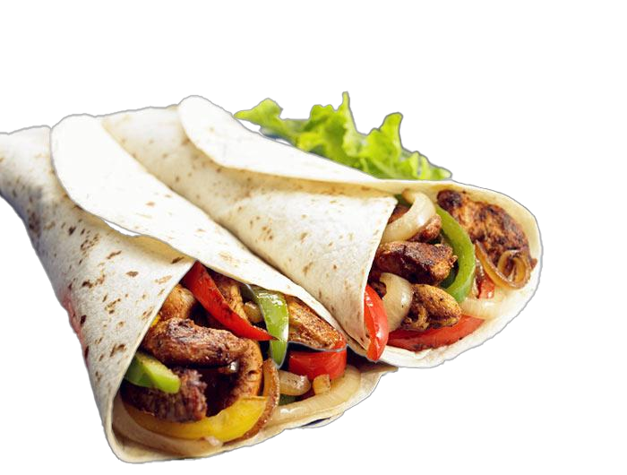
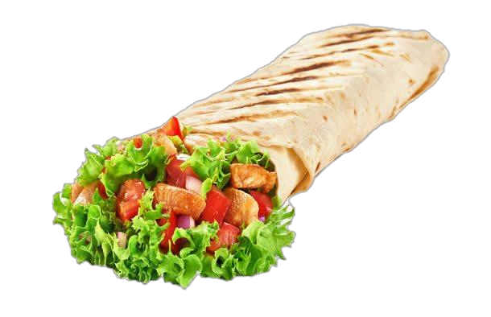

Food Example Image


Tortilla Production Line
JKXGB-1200 Super Tortilla Automatic Production Line
The JKXGB-1200 is a high-yield, fully automatic tortilla production line using continuous pressing technology. It is designed for industrial-scale bakeries requiring stable throughput, consistent thickness, and reduced labor.
Automation
Up to 90%
Control
PLC + HMI (touchscreen)
Application
Flour tortillas / wraps
Line Type
Continuous pressing + tunnel baking
Technical Parameters
| Production Capacity |
6": 18,000–20,000 pcs/h 8": 14,000–18,000 pcs/h 10": 8,000–10,000 pcs/h 12": 4,000–6,000 pcs/h |
|---|---|
| Tortilla Diameter Range | 6" / 8" / 10" / 12" (by mold & configuration) |
| Thickness Control | Configurable (by pressing setting and dough formula) |
| Power | 180 kW |
| Heating | Tunnel oven (gas/electric by configuration) |
| Overall Dimensions | 40,759 × 3,300 × 4,000 mm |
| Pressure Range | 0.7–1.0 MPa |
| Automation & Safety | Sensor monitoring, safety guards, emergency stops, interlocks |
| Application | Flour tortillas, wraps and similar flatbread products |
Process Flow
- Dough mixing and resting
- Dough dividing and ball forming
- Proofing via automatic proofer
- Continuous pressing and forming into tortillas
- Continuous baking in tunnel oven
- Cooling on multi-layer cooling racks
- Automatic inspection and stacking
- Ready for packaging
Options & Customization
- Custom line layout according to factory space
- Different tortilla diameters and thickness ranges
- Integration with automatic packaging and counting systems
- Energy optimization and gas consumption control
- Cooling/stacking configuration for your packaging method
Request a Quotation
Send your target capacity, tortilla size range, and available factory space. We will propose a tailored line configuration and layout.
Contact JIN KE MACHINERY